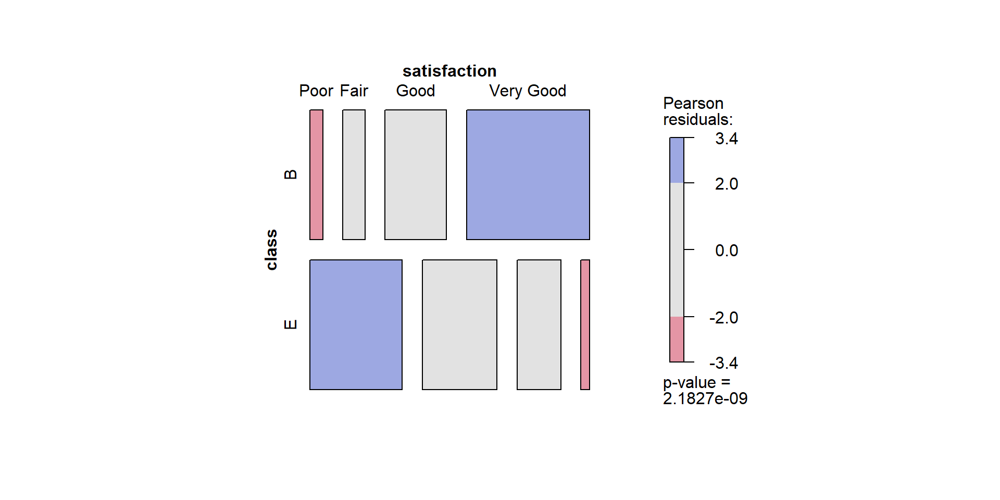
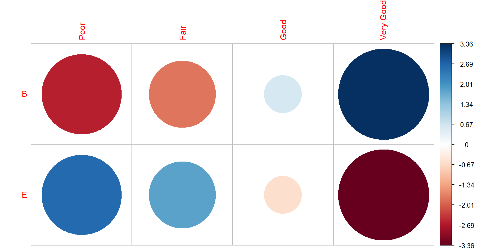

| Class | Poor | Fair | Good | Very Good |
|---|---|---|---|---|
| B | 3 | 5 | 14 | 28 |
| E | 21 | 17 | 10 | 2 |
ST201 - Data analysis
By the end of this lecture, we should be able to:
Last week, we investigate whether two categorical variables are associated.
Today: What can we learn beyond “significant” or “not significant”?
Suppose we obtain the following result for travel class and satisfaction
\[ \chi^2(3) = 43.25; p < 0.001 \]
There is evidence of an association between travel class and satisfaction
But we still need to ask
| Class | Poor | Fair | Good | Very Good |
|---|---|---|---|---|
| B | 3 | 5 | 14 | 28 |
| E | 21 | 17 | 10 | 2 |
The \(\chi^2\) test tells us that the overall table differs from what independence would predict.
Which cells are responsible for that difference?
| Class | Poor | Fair | Good | Very Good |
|---|---|---|---|---|
| B | 12 | 11 | 12 | 15 |
| E | 12 | 11 | 12 | 15 |
Some cells are close to what we expected
Others are quite different
Recall that the \(\chi^2\) statistic is represented as
\[ \chi^2 = \sum_i \sum_j \frac{(O_{ij} - E_{ij})^2}{E_{ij}} \]
and the individual deviations in the table itself are represented as
\[ \frac{(O_{ij} - E_{ij})^2}{E_{ij}} \]
But how can we see which cells differ from expectation?
We can quantify how unusual each cell is
\[ r_{ij}^2 = \frac{(O_{ij} - E_{ij})^2}{E_{ij}} \]
\[ r_{ij} = \frac{O_{ij} - E_{ij}}{\sqrt{E_{ij}}} \]
How far is this cell from what we would expect under independence?
Interpretation
pearson-residual.R
| Class | Poor | Fair | Good | Very Good |
|---|---|---|---|---|
| B | 3 | 5 | 14 | 28 |
| E | 21 | 17 | 10 | 2 |
| Class | Poor | Fair | Good | Very Good |
|---|---|---|---|---|
| B | 12 | 11 | 12 | 15 |
| E | 12 | 11 | 12 | 15 |
| Class | Poor | Fair | Good | Very Good |
|---|---|---|---|---|
| B | -2.6 | -1.81 | 0.577 | 3.36 |
| E | 2.6 | 1.81 | -0.577 | -3.36 |
pearson-residual.R
| Class | Poor | Fair | Good | Very Good |
|---|---|---|---|---|
| B | 3 | 5 | 14 | 28 |
| E | 21 | 17 | 10 | 2 |
| Class | Poor | Fair | Good | Very Good |
|---|---|---|---|---|
| B | 12 | 11 | 12 | 15 |
| E | 12 | 11 | 12 | 15 |
| Class | Poor | Fair | Good | Very Good |
|---|---|---|---|---|
| B | -2.6 | -1.81 | 0.577 | 3.36 |
| E | 2.6 | 1.81 | -0.577 | -3.36 |


Suppose a cell has a positive Pearson residual
What does that tell us?
Answer B
A positive residual means that the cell contains more observations than expected under independence.
\[ \chi^2(3) = 43.25; p < 0.001 \]
This result tells us that there is a significant association, but nothing about the strength of that association
A very large sample can produce a statistically significant result even when the association is quite weak.
Statistical significance and strength are different questions
One way to describe the strength of association between two categorical variables is Cramér’s V.
\[ V = \sqrt{\frac{\chi^2}{n \times (k - 1)}} \qquad k = \text{min}(R, C) \]
\(V\) ranges from 0 - 1 where values near 0 indicate little association, while values closer to 1 indicate a stronger association
cramer-v.r
\[ V = 0.656 \]
Context matters
Avoid interpreting an effect size using universal cut-offs without considering the research context.
Study A
\[ p < 0.001; V = 0.08 \]
Study B
\[ p < 0.001; V = 0.65 \]
A small p-value does not tell us how large an association is
With very small expected counts, the approximation may not be reliable.
| Athlete | Non-smoker | Smoker |
|---|---|---|
| Athlete | 7 | 2 |
| Non-athlete | 2 | 3 |
Is smoking associated with being an athlete?
Rather than using a \(\chi^2\) approximation, Fisher’s exact test calculates a p-value from the probabilities of possible tables, conditional on the observed row and column totals.
| Athlete | Non-smoker | Smoker | Sum |
|---|---|---|---|
| Athlete | 7 | 2 | 9 |
| Non-athlete | 2 | 3 | 5 |
| Sum | 9 | 5 | 14 |
There are 6 possible tables we can derive from this table
| Athlete | Non-smoker | Smoker | Sum |
|---|---|---|---|
| Athlete | 4 | 5 | 9 |
| Non-athlete | 5 | 0 | 5 |
| Sum | 9 | 5 | 14 |
| Athlete | Non-smoker | Smoker | Sum |
|---|---|---|---|
| Athlete | 5 | 4 | 9 |
| Non-athlete | 4 | 1 | 5 |
| Sum | 9 | 5 | 14 |
| Athlete | Non-smoker | Smoker | Sum |
|---|---|---|---|
| Athlete | 6 | 3 | 9 |
| Non-athlete | 3 | 2 | 5 |
| Sum | 9 | 5 | 14 |
| Athlete | Non-smoker | Smoker | Sum |
|---|---|---|---|
| Athlete | 7 | 2 | 9 |
| Non-athlete | 2 | 3 | 5 |
| Sum | 9 | 5 | 14 |
| Athlete | Non-smoker | Smoker | Sum |
|---|---|---|---|
| Athlete | 8 | 1 | 9 |
| Non-athlete | 1 | 4 | 5 |
| Sum | 9 | 5 | 14 |
| Athlete | Non-smoker | Smoker | Sum |
|---|---|---|---|
| Athlete | 9 | 0 | 9 |
| Non-athlete | 0 | 5 | 5 |
| Sum | 9 | 5 | 14 |
Each possible table has a probability under the conditional null model
We can represent these probabilities as
\[ P(\text{table}) = \frac{(a+b)!(c+d)!(a+c)!(b+d)!}{N!a!b!c!d!} \]
The probability of obtaining the observed table under the conditional null model is:
\[ \begin{align*} P(\text{table}) &= \frac{(9)!(5)!(9)!(5)!}{14! \; 7! \; 2!\; 2!\; 3!} \\ P(\text{table}) &= 0.1798 \dots \\ &\approx 0.18 \end{align*} \]
We repeat this procedure for all possible tables
| Table 1 | Table 2 | Table 3 | Table 4 | Table 5 | Table 6 |
|---|---|---|---|---|---|
| 0.0629 | 0.3147 | 0.4196 | 0.1798 | 0.0225 | 0.0005 |
We sum up all the probabilities less than or equal to our observed table
\[ 0.0629 + 0.1798 + 0.0225 + 0.0005 = 0.2657 \]
Fisher's Exact Test for Count Data
data: smoker_table
p-value = 0.2657
alternative hypothesis: true odds ratio is not equal to 1
95 percent confidence interval:
0.2990134 99.1958282
sample estimates:
odds ratio
4.575127 How do I report these results
Of the 9 athletes, 2 were smokers \((22\%)\) and of the 5 Non-athletes, 3 were smokers \((60\%)\), indicating that non-athletes are almost 3 times more likely than athletes to be smokers. However, given the small sample size, Fisher’s exact test was conducted to test whether being an athlete influenced smoking habits.
The results were not significant \((p > 0.05)\) and we concluded there is no evidence of a relationship between smoking and being an athlete based on these data.
Tips on reporting results
Breaking news: Being an athlete reduces your chances of smoking